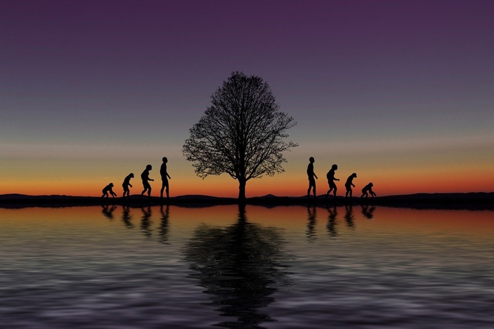
Nos últimos anos, venho refletindo profundamente sobre o processo educativo e o papel residual que o ser humano e suas emoções ocupam na escola. O ambiente escolar, em sua essência, tornou-se um local de mera transmissão... 02 de setembro de 2024
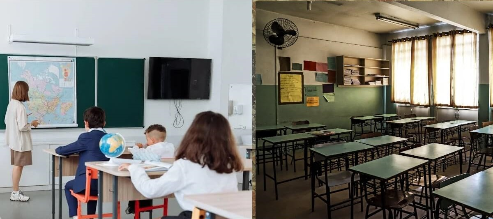
Quando pensamos em educação, é comum associarmos diretamente ao vestibular. 05 de junho de 2024
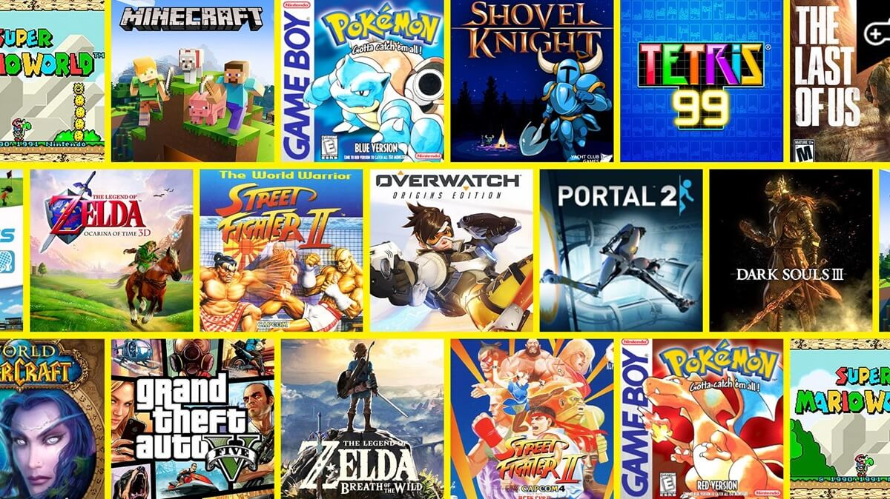
Os videogames são frequentemente vistos apenas como entretenimento, mas eles também podem ser ferramentas poderosas de aprendizagem. 26 de maio de 2024
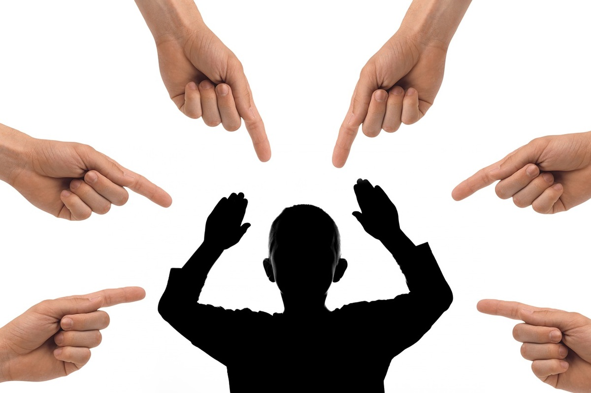
Desde cedo, somos ensinados a competir em praticamente todos os aspectos da vida, especialmente na educação. 18 de maio de 2024
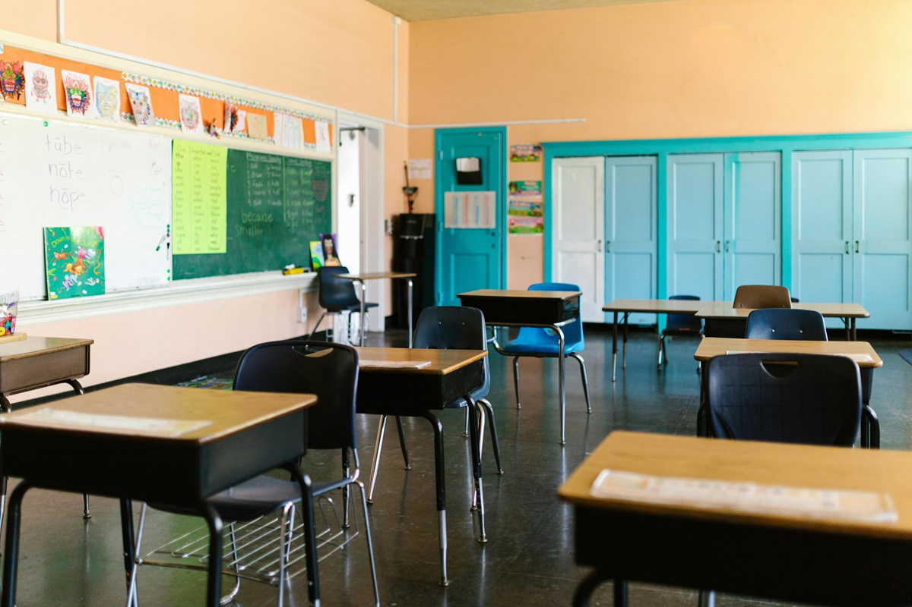
Vivemos em uma sociedade que frequentemente proclama a importância da educação. Os pais, as autoridades e os meios de comunicação exaltam o valor da escola ... 14 de maio de 2024
No atual cenário, o debate entre a privatização e a manutenção das empresas estatais está em destaque. O povo brasileiro pode e deve participar da geração de riqueza do país... 10 de maio de 2024
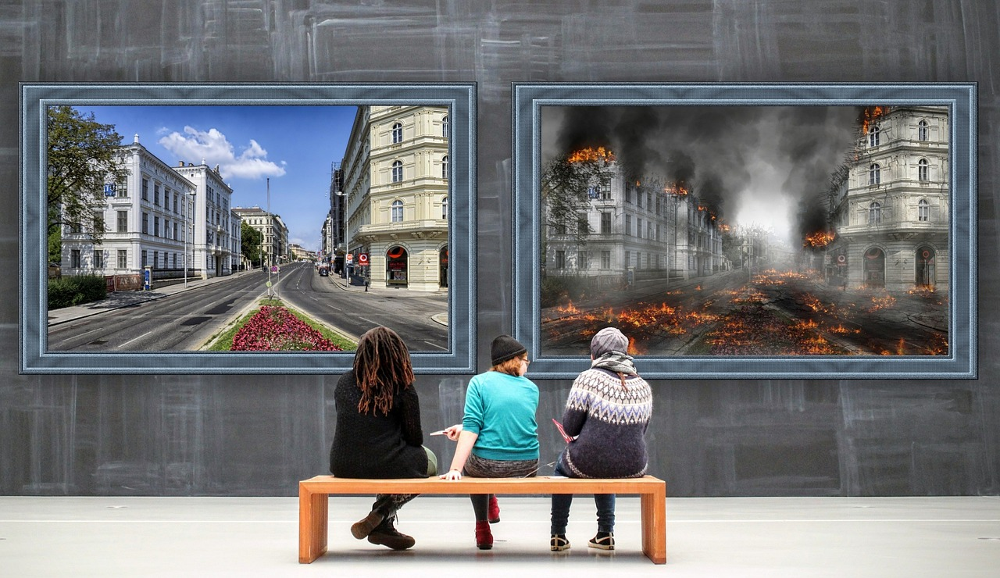
Na jornada das ideias políticas e sociais, duas visões se destacam: ser revolucionário ou reformista. Qual delas é a melhor? 05 de maio de 2024
O Bitcoin é nova promessa de liberdade econômica atual. A promessa de que uma moeda promoverá uma mudança tão radical na sociedade que... 27 de abril de 2024
A todo momento, o temor de uma Terceira Guerra Mundial surge na mídia e se prolonga por alguns dias ou até semanas, e isso tem se repetido há muito tempo. No entanto, o que não é suficiente para... 20 de abril de 2024
Fiz apenas um relato, dos inúmeros que um professor enfrenta em seu cotidiano. As dificuldades de lidar com a realidade das escolas públicas... 14 de abril de 2024.
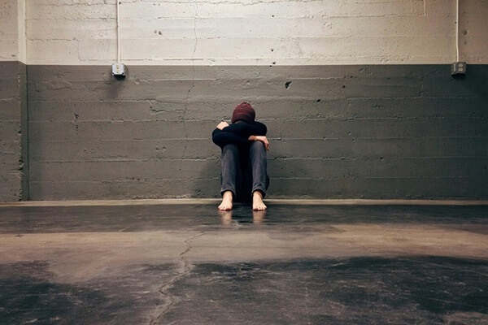
A escola é um lugar de aprendizado, crescimento e descobertas, mas para muitos estudantes, pode ser um ambiente desafiador... 7 de abril de 2024.
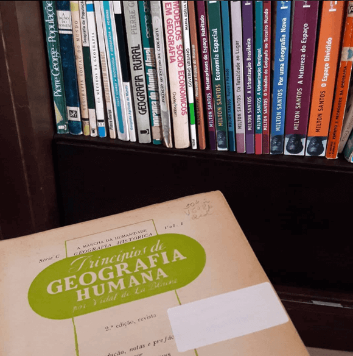
Observador; professor; aspirante a pixel artista; programador de fundo de quintal; escritor do mundo interno; Deutschlerner.
Arte Educação Filosofia Finanças Jogos digitais Línguas Programação Poemas Viagens
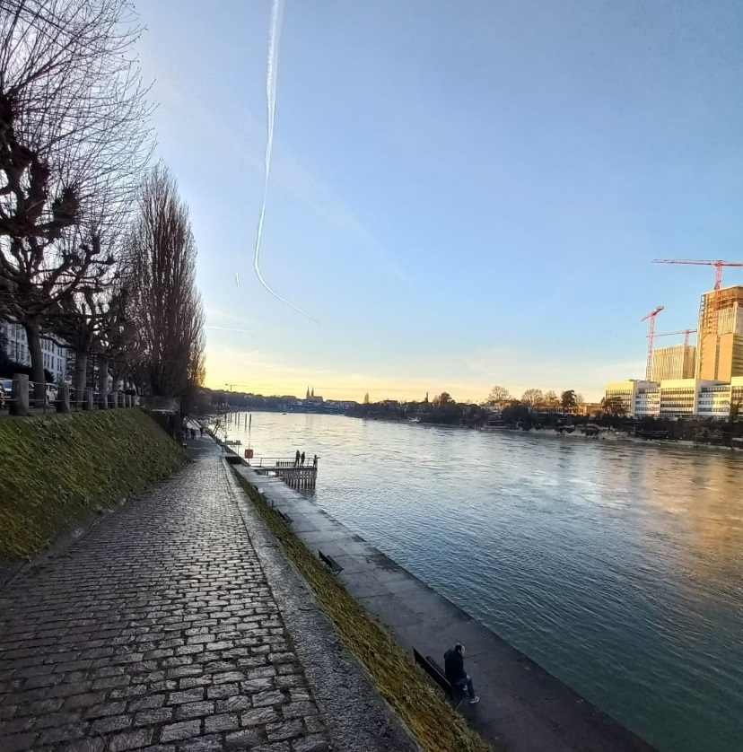
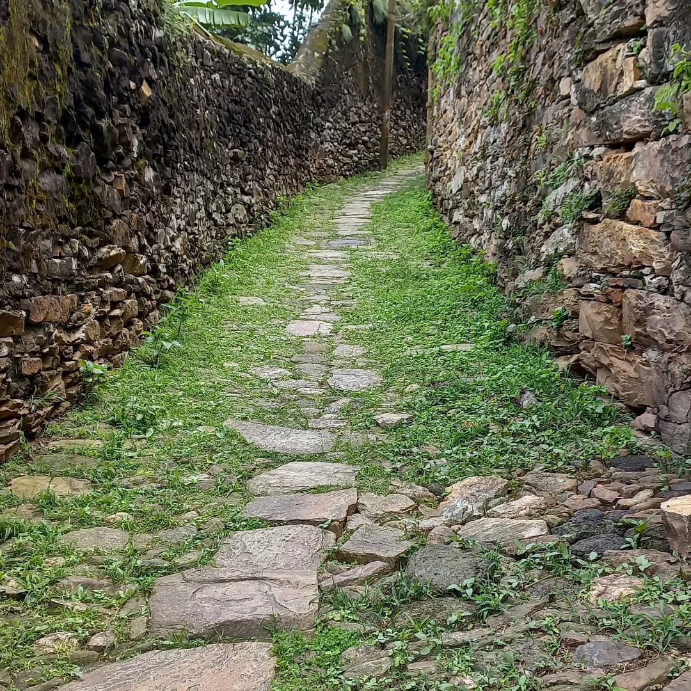
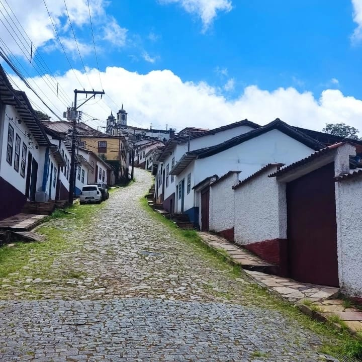
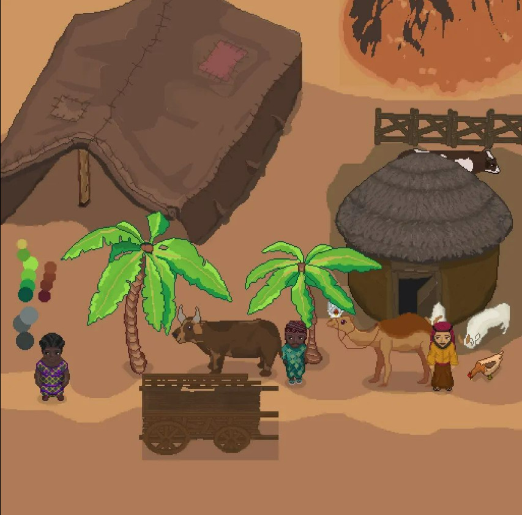